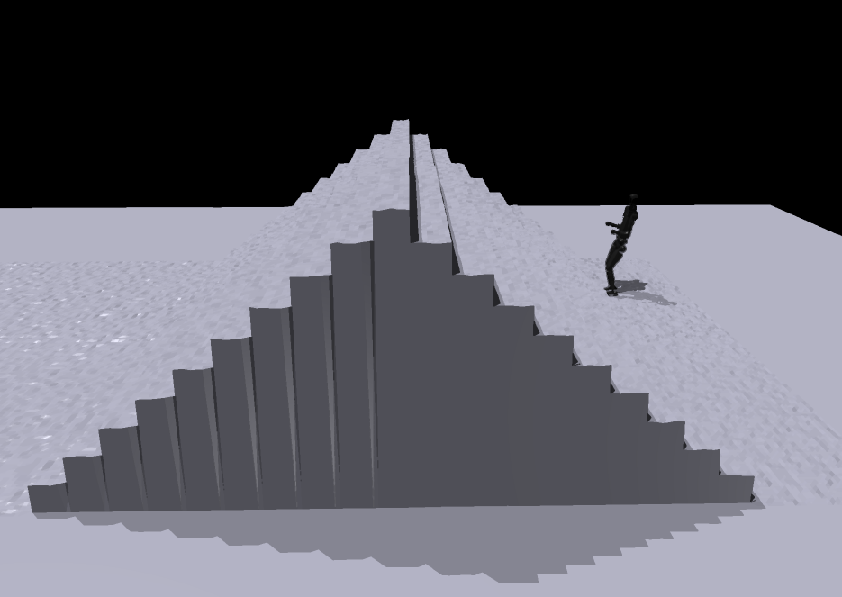
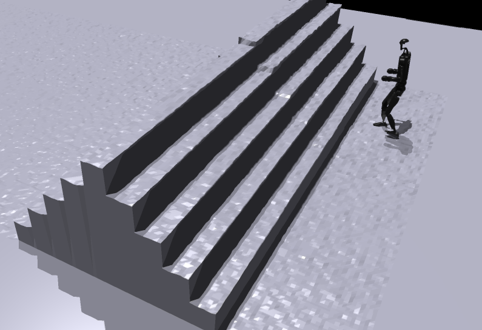

Introduction
This challenge focuses on developing robust locomotion controllers for humanoid robots to navigate complex, unstructured terrains - a critical capability for real-world deployment in homes, disaster zones, and natural environments.
Using the high-performance Isaac Gym simulator, participants will create control policies that enable humanoids to traverse diverse surfaces including slopes, stairs and rubble terrain. The competition provides standardized robots and terrains, allowing you to focus on advanced locomotion strategies.
Key question for participants: Can your control policy enable a humanoid robot to traverse challenging, unseen terrains as far as possible, and as efficiently as possible when completing the course?
Challenge Overview
Participants will develop locomotion policies for humanoid robots navigating three specially designed terrain tracks:
Robotic Platforms
Choose from four state-of-the-art humanoid models:
- Unitree G1
- Unitree H1_2
- Fourier GR-1
- N1 Humanoid
Competition Objective
Your goal is twofold:
- Maximize traversal distance - Go as far as possible on each terrain track
- Minimize completion time - If you complete the track, faster times earn higher scores
The final score combines both distance coverage and efficiency metrics.
Policy & Participation
Policy Specifications
Your control policy must process standardized observations and output specific control signals:
Input (Observation Space)
The policy will receive the following observations at each timestep:
- Joint positions and velocities ([joint_details])
- Base orientation and angular velocity ([base_orientation_details])
- Terrain height samples around the robot ([terrain_sampling_details])
- Previous action values ([action_history_details])
- Keep Tuned!
Complete observation specifications will be provided in the Open Source documentation.
Output (Action Space)
Your policy must output:
- Target joint positions ([joint_target_details])
- Optional: Keep Tuned!
Note: Your policy must align with the provided observation space, otherwise, you may lose your score!
We recommend using distillation if you've trained with customized observations.
Participation Process
Submit your policies through our client-server evaluation system:
- Register via email to [registration_email] to receive your unique participant token
- You can evaluate your policy periodically via our REST API
- You'll receive rollout trajectories and scores in real-time
Registration template
Subject: ICCV2025 Humanoid Locomotion Challenge Registration
Stay Tuned!
All submissions remain private - only aggregated scores will be made public.
Protocols
Test Scenarios
Policies will be evaluated on three specialized Scenarios:
- Robustness Track: Extended terrain sequences testing endurance
- Generalization Track: Novel terrain combinations testing adaptability
- Extreme Track: Maximum-difficulty terrains testing capability limits
Scoring Metric
Performance is measured using a weighted combination of:
- Completion Rate (60%): Percentage of track traversed
- Efficiency Score (40%): Timesteps normalized by completion percentage
Scoring Formula
Score Metric Keep Tuned!
Total Score = (Completion %) × 60 + (Efficiency Factor) × 40
Example Calculation:
If a robot completes 80% of a track in 500 timesteps:
Completion Score = 80% × 60 = 48
Efficiency Factor = (Reference Time / Actual Time) × Completion % = (400/500) × 80% = 64%
Efficiency Score = 64% × 40 = 25.6
Total Score = 48 + 25.6 = 73.6
Full evaluation details and reference times will be published in the starter kit.
🏆 Awards
🥇 First Prize ($1000) 🥈 Second Prize ($500) 🥉 Third Prize ($300)
Note
- Participation in the award selection requires open-source code.
- Awards and rankings are separate.
Open Source
Our Open-source Terrain Benchmark is accessible in this repository. You are required to use this repository to participate in the challenge using either Unitree H1-2, G1 or Fourier N1.
Resources
- Terrain Suite: A diverse set of terrains implemented in Isaac Gym, including slopes, stairs, rubble, uneven ground, and slippery surfaces.
- Training Platform: A foundational training platform for developing and testing locomotion control policies.
- Documentation: Comprehensive documentation to guide participants in using the benchmark effectively.
- Reference paper: We highly recommend you to read this paper to understand how to train a humanoid locomotion policy from scratch for multi-terrain crossing in Isaac Gym.
Tracks
We have designed different tracks to evaluate the different performance of robots. All terrain used for evaluation comes from the single terrain model of the terrain module provided in the code.
-
Robustness Evaluation: To evaluate the robustness of the robot, we will extend the size of the terrain several times. Taking stair terrain as an example, we will expand the 5-10 steps used during training to 20 or even more steps to test the robustness of the robot.

Stair terrain for Robustness evaluation
-
Extreme Evaluation: To assess the upper limits of locomotion strategies, we conduct extreme terrain evaluations. For example, the height of stairs will be set significantly higher than in typical scenarios. These challenging conditions are designed to test the maximal capability of the trained humanoid policies, revealing potential failure modes and identifying areas for further improvement.

Stair terrain for Extreme evaluation
-
Generalization Evaluation: To evaluate the generalization performance of locomotion strategies, we create complex scenarios by combining multiple types of terrain within single environments. By requiring robots to transition smoothly and adaptively between different terrain elements—such as stairs, slopes, rubble, and narrow bridges—we can more rigorously assess their ability to generalize learned skills and robustly handle a variety of unseen or mixed conditions in real-world environments.
Rules
- Eligibility: Participation is open to academic, industry, and independent teams worldwide. Each team may submit only one entry.
- Submission: Submit trained policies through our online system as described in the Policy & Participation section.
- Evaluation: Policies will be evaluated on the three competition tracks using the Evaluation Protocol.
- Fair Play: Use of cheating techniques, hard-coding the test environment, or exploiting simulator bugs is strictly prohibited.
- Final Decisions: The organizing committee reserves the right to make final decisions regarding rule interpretation and winner selection.